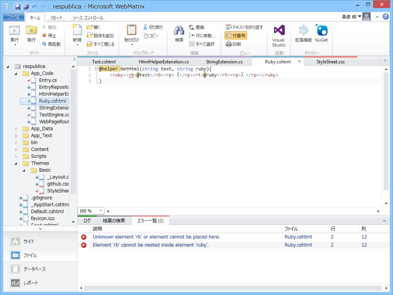

WebMatrix：ルビを振るためのヘルパーを作ってみる
公開日：

とりあえずオーソドックスに App_Code フォルダ以下に Ruby.cshtml を作ってこんな感じに記述。
# ~/Ruby.cshtml@helper GetHtml(string text, string ruby){ <ruby><rb>@text</rb><rp>（</rp><rt>@ruby</rt><rp>）</rp></ruby> }
使い方はこんな感じ .cshtml の名前がそのまま静的クラスの名前になっていて、定義したヘルパー関数が呼べる。
# ~/Test.cshtml
@{
}
<!DOCTYPE html>
<html lang="en">
<head>
<meta charset="utf-8" />
<title></title>
</head>
<body>
@Ruby.GetHtml("柳 英俊", "やなぎ ひでとし")
</body>
</html>

（※見やすいように拡大してある）
自分はルビのタグなんか覚えるの面倒だし、ましてやルビタグが解釈できない Firefox のことまで考えてコーディングするのは面倒なので、こういうヘルパーを作るのが好み。
ちょっとハッテン
# ~/App_Code/HtmlHelperExtensions.csusing System; using System.Collections.Generic; using System.Linq; using System.Web; using System.Web.WebPages.Html;
public static class HtmlHelperExtenstion { public static IHtmlString Ruby(this HtmlHelper helper, string text, string ruby) { return new HtmlString(string.Format( "<ruby><rb>{0}</rb><rp>（</rp><rt>{1}</rt><rp>）</rp></ruby>", text, ruby )); } }
こうやって HtmlHelper の拡張メソッドとして定義しておけば
@Html.Ruby("柳 英俊", "やなぎ ひでとし")
で同様のことができるようになる。